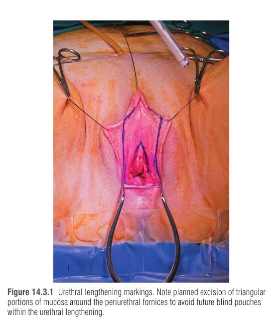
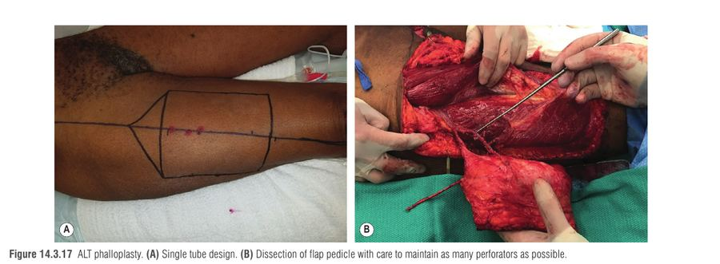

פרק 25: ניתוח אישוש מגדר מנקבה לזכר – פלופלסטיה ותיקון פגמים גניטליים בגבר Gender Affirmation Surgery, Female to Male: Phalloplasty
מתוך Plastic Surgery, Neligan – כרך 4: Trunk and Lower Extremity | פרק 14.3, מאת Li, Lin ו-Safa
הפרק עוסק בשיחזור גניטלי עבור גברים טרנסג'נדרים (transmasculine) – בעיקר פלופלסטיה (phalloplasty, בניית נאו-פאלוס מתדלה חופשית או מקומית) ומטואידיופלסטיה (metoidioplasty, הארכת הקליטוריס שהתגדל מהורמונים) – ובסופו גם בשיחזור פגמים גניטליים בגבר ציס (טראומה, כוויה, זיהום, קטיעה). זהו פרק שבו כמעט כל החלטה נגזרת משלוש מטרות של המטופל, ולכן הכי חשוב להבין את ההיגיון של עץ ההחלטה ולא רק לשנן טכניקות.
1 בחירת מטופל והכנה – למה כל כך הרבה תנאים מקדימים
הניתוח בלתי הפיך ומדורג, ולכן: שני מכתבי הפניה ממומחי בריאות הנפש (WPATH SOC) ← לפחות שנה של טיפול הורמונלי ← ייעוץ כירורגי פנים-אל-פנים ← אופטימיזציה (עישון, השמנה). למה הורמונים קודם? טסטוסטרון מעלה את הרמה לטווח גברי (300–1000 ng/dL) וגורם להיפרטרופיה של הקליטוריס ושל הלביה – רקמה "גולמית" שהמנתח ישתמש בה לבניית השופכה הקבועה (pars fixa) ולסקרוטום. כלומר ההורמון הוא שלב הכנה כירורגי ולא רק אסתטי.
תופעות לוואי אפשריות של הטיפול: פוליציטמיה, פרופיל שומנים לא תקין ואוסטאופורוזיס. אין צורך לשנות את משטר ההורמונים סביב הניתוח (אלא אם המינון על-פיזיולוגי – אז יש להיוועץ באנדוקרינולוג).
BMI מעל 35 הוא התוויית-נגד יחסית – המרחק לכלי הקולט גדול יותר ועובי אתר התורם גדול. עישון והשמנה מעלים סיכון לאיחור ריפוי ולנמק חלקי של הפלאפ, ולכן יש לאופטם לפני הניתוח.
2 עץ ההחלטה – שלוש שאלות שקובעות הכול
הפרק מדגיש שלוש מטרות: (1) מתן שתן בעמידה (standing micturition), (2) יחסי מין עם חדירה, (3) אסתטיקה של הנאו-פאלוס. התשובות מכוונות לבחירת הניתוח ולאתר התורם:
חצים בכיוון ימין-שמאל לפי כיוון הקריאה בעברית. תרשים מפושט של Algorithm 14.3.1 בפרק.
מי שרוצה לעמוד ולהשתין וגם חדירה ואורך מתאים ← tube-in-tube (שופכה פנימית בתוך צינור חיצוני). מי שמוכן לוותר על השתנה מהקצה ← shaft-only מפחית משמעותית סיכון אורולוגי. מומלץ לבצע וגינקטומיה בכל פעם שמאריכים שופכה, כי היא מאפשרת כיסוי הקו התפרים בשכבות וסקולריות (ירידה משמעותית בסיבוכים).
3 שיחזור פרינאלי: pars fixa, וגינקטומיה וסקרוטופלסטיה
pars fixa = קטע השופכה הקבוע (לא ניתן להזזה) מהפתח השופכתי המקורי עד ראש הקליטוריס, נבנה מרקמה מקומית (לביה מינורה חסרת שיער). pars pendulans = הקטע התלוי, שעובר בתוך הנאו-פאלוס.
ההרכבה: וגינקטומיה ← צינור שופכה מלביה מינורה ← כיסוי ב-"pants-over-vest" ובפלאפי בולבוספונג'יוזוס ← סקרוטופלסטיה מלביה מז'ורה.
וגינקטומיה: כריתת הרירית (בפרוקסימלי – באלקטרוקאוטריזציה בגלל הסיכון לפגיעה במעי), ואז סגירת הכיפה על עצמה (colpocleisis) לסגירת חלל מת. תפרים עמוקים בזהירות כדי לא לפגוע בחלחולת (rectum).
למה חותכים משולש רירית סביב ה-periurethral fornices? כדי למנוע כיסים עיוורים בשופכה המוארכת. כיס עיוור גורם לקיפאון שתן, הצטברות פסולת ולקושי להחדיר קטטר מאוחר יותר.
אם צריך עוד אורך: 1–2 ס"מ נוספים מהאפיתל הוונטרלי של הקליטוריס (דה-אפיתליזציה של הקצוות הצדדיים וצינור).
הקליטוריס עובר דה-אפיתליזציה, עצב הגב של הקליטוריס (dorsal clitoral nerve) מסומן לצורך חיבור (קואפטציה) מאוחר לעצב המורגש של הפלאפ.
סקרוטופלסטיה: פלאפים פשיוקוטניים מהלביה מז'ורה, נתפרים על עצמם בשכבות.

סימוני הארכת השופכה – כריתת חלקים משולשים של הרירית סביב ה-fornices למניעת כיסים עיוורים — Neligan 5th ed., Fig. 14.3.1
4 שיטות לשלב הניתוח – מה היתרון והחיסרון של כל סדר
סדר
שלבים
יתרון
חיסרון
שלב אחד
מסקולניזציה פרינאלית + tube-in-tube באותו ניתוח
ניתוח יחיד
הרדמה ארוכה; סיכון מצטבר מכמה פרוצדורות
מטואידיופלסטיה קודם
1) מטואידיופלסטיה 2) פלופלסטיה
האנסטומוזה הפרוקסימלית של השופכה מחלימה לפני הפלופלסטיה; מתאים למי שלא בטוח לגבי פלופלסטיה עתידית
ניתוחים נוספים; סיבוכי הפלאפ עלולים לפגוע בשתן
"Big Ben" (Nim ו-Ralph, לונדון)
1) tube-in-tube 2) מסקולניזציה פרינאלית
הפלאפ מחלים ללא לחץ שתן; כשל פלאפ לא מונע השתנה; תיאורטית פחות פיסטולות
ניתוחים נוספים; גניטליה נשית נשארת בין השלבים ויכולה להחמיר דיספוריה
היתרונות: הכי אמין ובעל שיעורי הישרדות וצינור שתן תקין הגבוהים ביותר; פדיקל וסקולרי צפוי; פלאפ דק וגמיש שמאפשר דאבל-טיוב; צפיפות עצבים טובה לנוירוטיזציה; ווסקולריות חזקה שמאפשרת גלנספלסטיה (בניית עטרה). חסרון עיקרי: אתר תורם בולט, ולעיתים צורך בפיזיותרפיית יד.
הכנה: אמה לא-דומיננטית ← מבחן Allen (ווידוא קשת פלמרית שלמה) ← במקרה חריג, חסימת העורק הרדיאלי במהלך הניתוח דרך חתך דיסטלי בשורש כף היד: אם היד מקבלת זרימה מספקת – ממשיכים; אחרת עוברים ל-ALT.
עובי הפלאפ – הנוסחה שמסבירה את הבחירות
מפושט מ-Figure 14.3.5 בפרק.
למה אין גלנספלסטיה בפלאפ דק (<0.5 ס"מ)? עטרה דורשת פלאפים בעובי מלא של העור, כך שהמקלעת התת-עורית (subdermal plexus) כבר אינה מזינה את קצה הגלנס ← סיכון לנמק דיסטלי.
למה לא פלאפ עבה מדי? אין תקרה קשיחה, אבל העובי מוכפל ארבע מונים בדאבל-טיוב, דורש יותר עור והגדלת פגם התורם, ויוצר יותר בצקת (מאיימת על הנוכחות).
סימון: לאורך העורק הרדיאלי, פרוקסימלי לקפל כף היד (קצה דיסטלי מדי פוגע בהארכת שורש כף היד). פס דה-אפיתליזציה בעובי 1 ס"מ רדיאלית ל-FCR שהוא ה"גשר הווסקולרי" בין הצינור הפנימי לחיצוני. רצועת השופכה ברוחב ~4 ס"מ דיסטלית; מאפשרת קטטר 16F.
הסרת שיער (לייזר/אלקטרוליזה) הרבה לפני הניתוח – מפחיתה אבנים בשופכה ו-post-void drip. יש להתייעץ גם על קעקועים באזור התורם.
שלבי הניתוח (RFFF)
שלב
נקודות מפתח
קטיף הפלאפ
תחת חוסם עורקים; פס הדה-אפיתליזציה דק ככל הניתן לשימור המקלעת הסב-דרמלית לשופכה; נשמר שתל העור לגלנספלסטיה; הווריד הצפלי נחקר עד ה-profunda cubitalis לניקוז משולב עם ה-venae comitantes; ווריד שטחי גדול לשופכה = אנסטומוזה ווסקולרית שנייה
עצבים
העצב העורי הלטרלי של האמה (lateral antebrachial cutaneous) נלקח עם הפלאפ לתחושת הנאו-פאלוס; הענף השטחי של העצב הרדיאלי נשמר באתר
טיובינג
קודם pars pendulans (קצה אולנרי + רצועה דה-אפיתלית, שתי שכבות, ביסים רדודים כדי לא לפגוע במקלעת), אחר כך העטיפה החיצונית; קווי תפר מקורבלים (staggered) מפחיתים סיכון לפיסטולה
גלנספלסטיה
קצה השופכה והצינור החיצוני נתפרים; עטרה מפלאפ בעובי מלא, ברוחב 1 ס"מ, 3 ס"מ מקצה הגלנס; שתל העור על השטח החשוף
הכנת המפשעה
בדרך כלל המפשעה הנגדית לפלאפ (פדיקל קצר יותר); חלופה: DIEA; עורק – end-to-side ל-SFA, וריד – end-to-end לווריד הספני הגדול
אתר תורם
סגירת מרווח BR–FCR, כיסוי גיד FCR, שתל עור דק (STSG) מהירך ב-NPWT וסד נפשי; בהמשך אפשר קעקוע ושתל שומן
יצירת הצינור: (A) הפלאפ, (B,C) צינור השופכה, (D) סגירת גוף הפין — Neligan 5th ed., Fig. 14.3.11
6 פלופלסטיה מ-ALT – ההבדלים החשובים
פרמטר
RFFF (אמה)
ALT (ירך)
שכיחות
הנפוץ ביותר
השני בשכיחותו
עובי
דק וגמיש – מתאים לדאבל-טיוב
לרוב עבה מדי לדאבל-טיוב ← לעיתים צינור בודד
תחושה
עצב אמה לטרלי
עצב עורי לטרלי של הירך (LCFN) – חייבים לקטוף עם הפציה
אתר תורם
בולט
קל יותר להסתיר; אפשר טישו אקספנדר לסגירה ראשונית
יתרון
אמינות, עורק+ניקוז, גלנספלסטיה
אורך וקוטר רב יותר; מתאים למי עם דרישות שתן נמוכות וסיכון מיקרווסקולרי גבוה
גלנספלסטיה
אפשרית בניתוח הראשון (אם עובי מתאים)
לא בניתוח הראשון – 2–3 חודשים לאחר הניתוח
דיבולקינג
פחות נדרש
כריתת שומן ישירה עדיפה על שאיבה (פחות פגיעה בשופכה ובענפי LCFN)
הטכניקה: קטיף suprafascial מהמדיאלי ללטרלי עד שפת ה-rectus femoris, ואז תת-פציאלי ללכידת perforators ו-LCFN. אין להשתמש בדיפטינג אגרסיבי – ענפי העצב עוברים מהפציה לעור. אם הזרימה לקויה: supercharging מפרפורטור נוסף.
מנהרה תת-שרירית עמוקה ל-rectus femoris ול-sartorius. חייבים לדאוג שהמנהרה רחבה מספיק כדי לא ללחוץ על הפדיקל. אם הפדיקל קצר – המרה ל-free flap עם השתל ורידי.
בהמשך: בצינור בודד – debulking, ואחרי שיווי משקל רקמתי – בניית צינור פנימי בשלב שני, ואז אנסטומוזה (שלב שלישי).

פלופלסטיה מ-ALT: (A) תכנון צינור יחיד, (B) דיסקציית הפדיקל תוך שימור פרפורטורים — Neligan 5th ed., Fig. 14.3.17
7 טיפול לאחר הניתוח וניתוחים משניים
נושא
פרטים
מנוחה במיטה
3 ימים (ב-RFFF: עד יום 4, שחרור ביום 5); הליכה הדרגתית ימים 4–5; להימנע מעומס נוזלים (בצקת פלאפ)
NPWT באתר התורם
מוסר ביום 5; סד לשבועיים נוספים לאמה + הפניה לריפוי בעיסוק
קטטרים
שחרור עם קטטר שופכה + סופרפובי. שופכה: מוציאים אחרי 1–2 שבועות; שבוע אחר כך – נסיון השתנה (~3 שבועות); אם תקין – סופרפובי מוצא כעבור שבוע
גלנספלסטיה/קורונופלסטיה
אם נדחתה: 2–3 חודשים; שתל עובי מלא מהמפשעה
פלופקסיה (phallopexy)
כשצלקת הבסיס מתרחבת והנאו-פאלוס יורד – התלייה מחדש וחיתוך חצי-סהר עליון
שתל זקפה
לפחות 6 חודשים (נדרשת תחושה); מוט חצי-קשיח או מתנפח; מעוגן ל-pubic symphysis
שתל שומן / קעקוע
שתל שומן להשלמת קווי מתאר באתר התורם והיפרסנסיטיביות; קעקוע אחרי ~6 חודשים
8 סיבוכים – מוקדמים ומאוחרים
מוקדמים (בעיקר הפלאפ): איחור ריפוי, כשל פלאפ, VTE, דימום, זיהום, ובצקת פלאפ דמוית תסמונת תאים: היקף הבסיס קבוע ← בצקת מלחיצה על ניקוז ורידי ← עוד בצקת ← איבוד פלאפ. טיפול: שחרור קו התפר הוונטרלי, משתנים; אם אין שיפור – חשיפה כירורגית של הבסיס והפדיקל, השארת הפלאפ פתוח, שתל עור ונסיגה מאוחרת.
רקמה מספקת וללא זיהום: כריתת הפיסטולה וסגירה מעל קטטר (אורטרוגרפיה 2–3 שבועות אחרי). אחרת: קודם שתל בוקאלי, ואחרי כ-6 חודשים סגירה שכבתית
שיער בשופכה / תפר נשאר
אבנים ← חשיבות הסרת שיער מראש; תפר ארוך-טווח (PDS) גורם לגרנולומות – טיפול אנדוסקופי
דיברטיקולה, UTI
לפי הקליניקה: זרם חלש, דליפת שתן, דיסוריה, ריקון חלקי
9 מטואידיופלסטיה – החלופה בלי אתר תורם מרוחק
הארכת הקליטוריס שהתגדל מהורמונים בעזרת שחרור ה-chordae והגופים הקברנוזיים מהתייחסויותיהם. נאו-פאלוס קטן יחסית (3–8 ס"מ); אין אפשרות לשתל זקפה ולכן לא מתאים למי שיחסי חדירה הם יעד. יתרון: אין אתר תורם מרוחק, ואפשר לבצע פלופלסטיה בהמשך בסיכון נמוך יותר.
פשוטה: שחרור chordae, העברת הצרור הנוירו-ווסקולרי, סגירה ונטרלית. מלאה: גם וגינקטומיה, סקרוטופלסטיה ואורטרופלסטיה.
מועמד אידיאלי: רזה, בריא, עם קליטוריס מוגדל מאוד וכמות מועטה של רקמה סביב.
10 פגמים גניטליים אחרים בגבר (ציס) – טראומה, כוויה, קטיעה
מצב
גישה
עקרונות
דברידמן רקמה לא-ויאבילית, שליטה בזיהום, ואז שיחזור מוקדם: שתל, פלאפ מקומי/אזורי, חופשי. זמני: חבישות לחות, אלוגרפט, NPWT
שתל עור (STSG) בפין
הבסיס הוא שתל עבה (18–20/1000 אינץ'), נתפר סביב הציר עם קו תפר ונטרלי, חבישת tie-over, מנוחה ממושכת. לעולם לא mesh רחב (צלקת מעוותת)
גלנס (סרטן)
STSG + תפרי quilting על הקורפוס ספונג'יוזום
שק האשכים
סגירה ראשונית בפגיעה חלקית; אובדן מלא – STSG אחרי קיבוע האשכים במקומם
פגמים גדולים
פלאפים: פודנדלי-תיגה פשיוקוטני, ALT פדיקלי, גרציליס (שרירי/מיוקוטני). אם פגם פין גדול: שקלי פלופלסטיה
שחזור (replantation)
מועמד אידיאלי: חיתוך חד ונקי + שימור נכון (גזה לחה, שקית, ושקית שנייה עם קרח ומים). לעיתים פצע עצמי – שילוב פסיכיאטר מראש. מיקרוסקופ; דברידמן מינימלי; ייצוב שופכה ו-tunica albuginea; ואז עורקי הגב העמוקים, וריד הגב העמוק והשטחי; מספר קואפטציות עצביות (10-0 / 11-0); סופרפובי 2–3 שבועות
11 טכניקות זכירה
ראשי תיבות: S-U-G – שלוש מטרות המטופל
S – Standing micturition (שתן בעמידה) ← צריך שופכה מוארכת (tube-in-tube). U – Union = penetrative intercourse ← צריך פלופלסטיה + שתל זקפה אחרי 6 חודשים. G – Glans/aesthetics ← עובי פלאפ 0.75–1.5 ס"מ מאפשר גלנספלסטיה מיידית.
ראשי תיבות: 0.5 – 6 – 6 של הפלופלסטיה
פחות מ-0.5 ס"מ עובי ← בלי גלנספלסטיה; 6 חודשים לשתל זקפה ולקעקוע; ו-6 חודשים אחרי סגירת פיסטולה מדורגת עם שתל בוקאלי.
סיפור דמיוני
דמייני מנתחת שבונה מגדלור: קודם היא מניחה יסוד מוצק בקרקע (pars fixa – הקבוע), אחר כך מורידה מהאוניה צינור-בתוך-צינור (האמה – שופכה בתוך עור, עם "גשר" דק של פס דה-אפיתל אחד ביניהם), מחברת את שני החלקים בחיבור אטום למים, ומותחת חוט תקשורת עצבי מהמגדלור אל היבשה (קואפטציה לעצב הקליטוריס). לבסוף היא מוסיפה את "המנורה" (גלנס) – אבל רק אם הקיר העבה מספיק (>0.5 ס"מ) כדי לא להישאר בלי חשמל (אספקת דם).
ארגון מקצועי בינלאומי; כולל Standards of Care (SOC) עם קריטריוני הזכאות לניתוח שהוזכרו בפרק.
גוף מקצועי
Morrison SD, et al. Phalloplasty: a review of techniques and outcomes. Plast Reconstr Surg 2016;138(3):594–615.
סקירה שהפרק מצטט (ref 10) להשוואת אתרים תורמים וסיבוכים.
ספרות מקור
Hembree WC, et al. Endocrine Society Clinical Practice Guideline: endocrine treatment of gender-dysphoric/gender-incongruent persons. J Clin Endocrinol Metab 2017;102(11):3869–3903.
מקור הערך 300–1000 ng/dL ותופעות הלוואי של הטיפול ההורמונלי (ref 1).
הנחיה קלינית
13 מקרה קליני ותרגול
וינייטה
גבר טרנסג'נדר בן 29, בטיפול טסטוסטרון מזה שנתיים, BMI 27, לא מעשן, עם שני מכתבי הפניה. הוא מבקש לעמוד ולהשתין, חדירה ופאלוס בגודל תואם. בבדיקת האמה הלא-דומיננטית: Allen תקין, עובי בקמצוץ 0.9 ס"מ. נבחרת פלופלסטיה מ-RFFF בשיטת tube-in-tube עם וגינקטומיה. ביום 2 הפאלוס נראה נפוח, סגול ומתוח, ובדופלר המושתל נשמע אות ורידי חלש.
1. מה עושה את ההבדל בהחלטה בין מטואידיופלסטיה לפלופלסטיה אצל המטופל בוינייטה?
התשובה הנכונה: לפי Algorithm 14.3.1, מי שמעוניין בחדירה ובאסתטיקה של נאו-פאלוס גדול ← פלופלסטיה; ואם גם רוצה לעמוד ולהשתין – שופכה מוארכת בעיצוב tube-in-tube. מטואידיופלסטיה (3–8 ס"מ, ללא שתל זקפה) מתאימה למי שחדירה אינה עדיפות. גיל, רמת טסטוסטרון בלבד או "אסתטיקה בלבד" אינם הגורם המכריע.
התשובה הנכונה: בגלל היקף בסיס קבוע, בצקת פוגעת בניקוז הורידי ויוצרת מעגל קסמים דמוי תסמונת תאים. שחרור התפר הוונטרלי + משתנים; כשלון ← אקספלורציה ופדיקל. עומס נוזלים מחמיר (תשובה 1). המתנה או כריתה מיידית (תשובות 3,4) מסכנות את הפלאפ שלא לצורך.
3. מדוע לא מבצעים גלנספלסטיה בניתוח הראשון בפלאפ ALT, או ב-RFFF דק (<0.5 ס"מ)?
התשובה הנכונה: עטרה נבנית מפלאפ עור בעובי מלא ← המקלעת הסב-דרמלית אינה מזינה עוד את הקצה. בפלאפ עבה/בצקתי מחכים 2–3 חודשים עד שהרקמה מתרככת. תשובות 1–3 אינן נכונות: אין בעיית פדיקל, ואין עורק נפרד לגלנס.
4. איזה משפט נכון לגבי מטואידיופלסטיה לפי הפרק?
התשובה הנכונה: מטואידיופלסטיה אינה מאפשרת שתל זקפה, אינה דורשת פלאפ חופשי, ומתאימה לרזים עם קליטוריס מוגדל. שיעור פיסטולות 7–15% והיצרות 2–3%. מי שרוצה חדירה צריך פלופלסטיה.
5. בשיחזור שופכה בפלופלסטיה: מה ההגנה המומלצת על קו התפר של האנסטומוזה בין pars fixa ל-pars pendulans?
התשובה הנכונה: כיסוי וסקולרי בשכבות ו-staggered suture lines מפחיתים פיסטולות. PDS ארוך-טווח גורם לגרנולומות; שתל חופשי אינו וסקולרי; האנסטומוזה היא אזור פגיע שבו מתרחשות רוב הפיסטולות והיצרויות.
6. בקטיעה חדה של הפין עם חלק נשמר: מה נכון לגבי הכנה והשחזור?
התשובה הנכונה: שימור נכון ללא מגע ישיר עם קרח; פגיעה עצמית שכיחה ולכן פסיכיאטר מוקדם (אך לא כתנאי לדחייה); יש לשקם עורקי גב עמוקים, וריד גב עמוק ושטחי וקואפטציות עצביות מרובות.
14 סיכום של הסיכום
דרישות מקדימות: 2 מכתבי בריאות נפש, שנה הורמונים (300–1000 ng/dL), BMI <35 יחסי, הפסקת עישון.
שלוש מטרות: שתן בעמידה, חדירה, אסתטיקה ← בוחרות בין מטואידיופלסטיה, shaft-only ו-tube-in-tube.
pars fixa מלביה מינורה אחרי וגינקטומיה; סקרוטופלסטיה מלביה מז'ורה; כיסוי בשכבות וסקולריות.
RFFF: אמין, דק, גלנספלסטיה אפשרית; עובי אופטימלי 0.75–1.5 ס"מ; <0.5 ס"מ ← בלי עטרה בהתחלה; קוטר ≈ 4 × עובי.
ALT: עבה, תורם מוסתר, בדרך כלל צינור בודד; גלנספלסטיה אחרי 2–3 חודשים; דיבולקינג בכריתה ישירה.